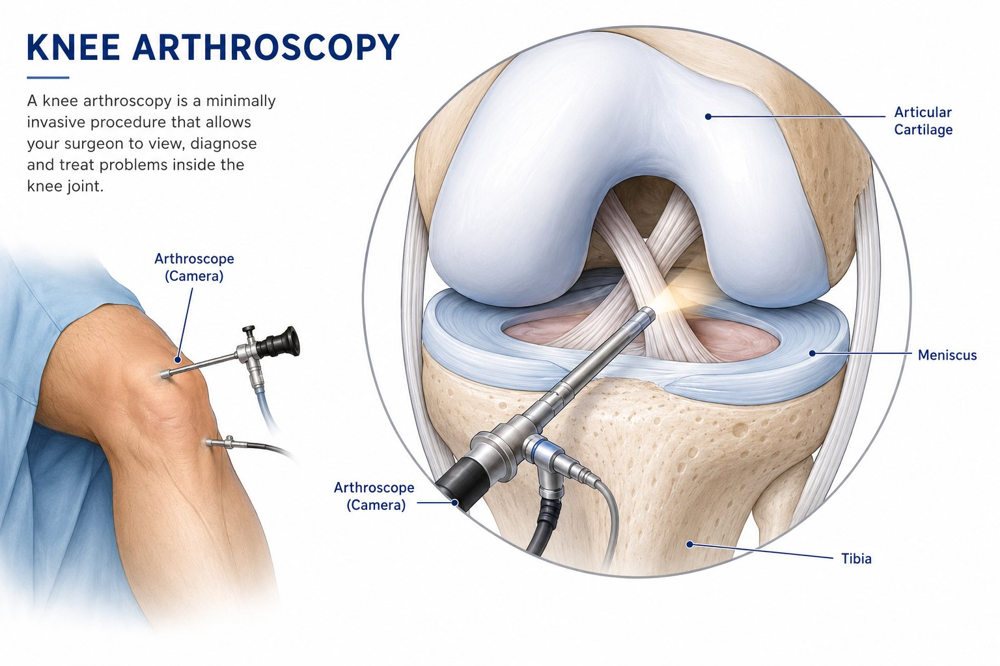
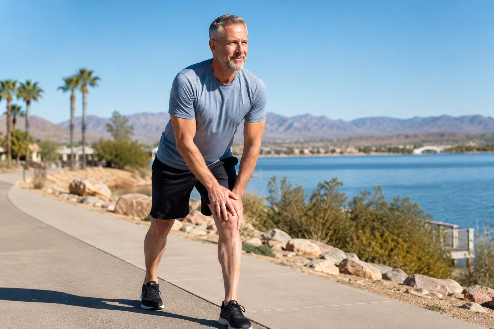
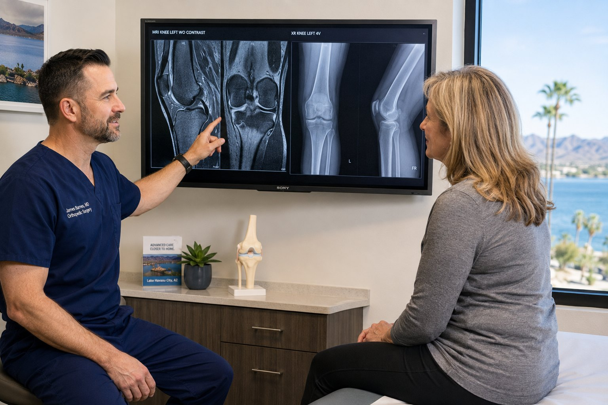
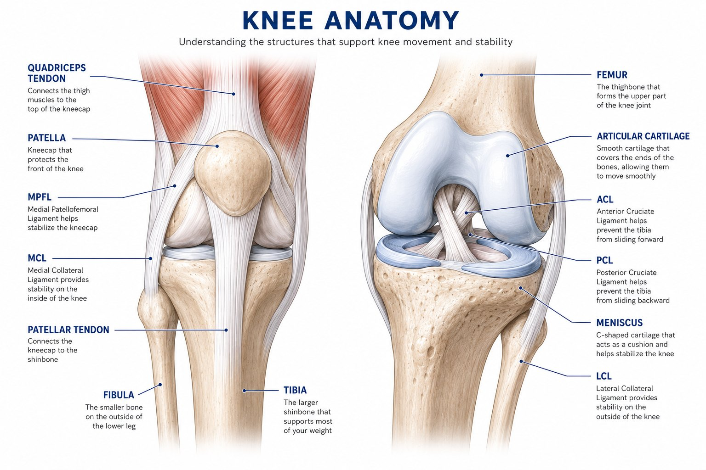
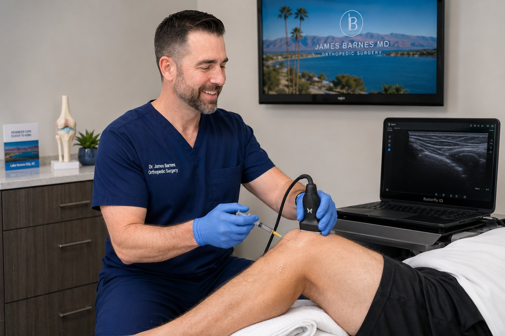
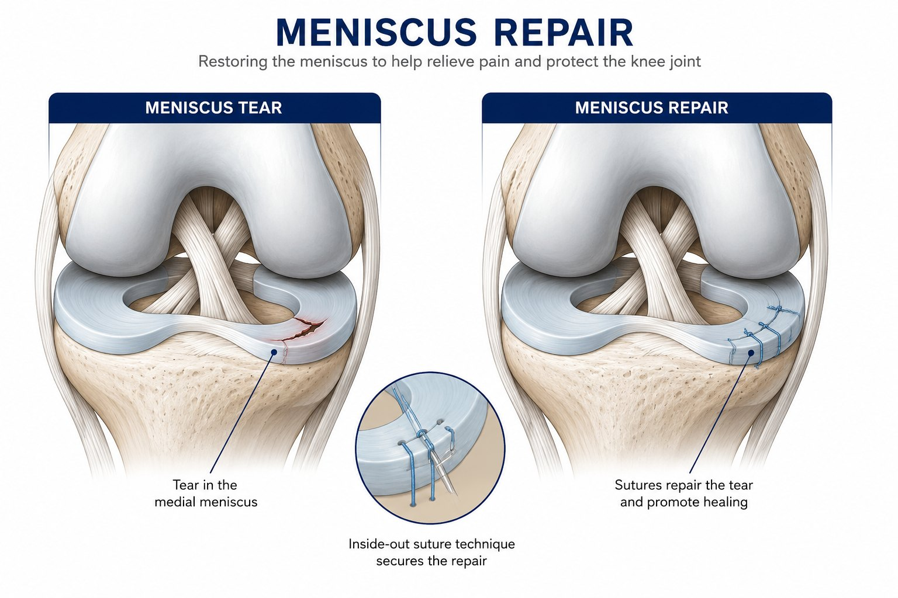
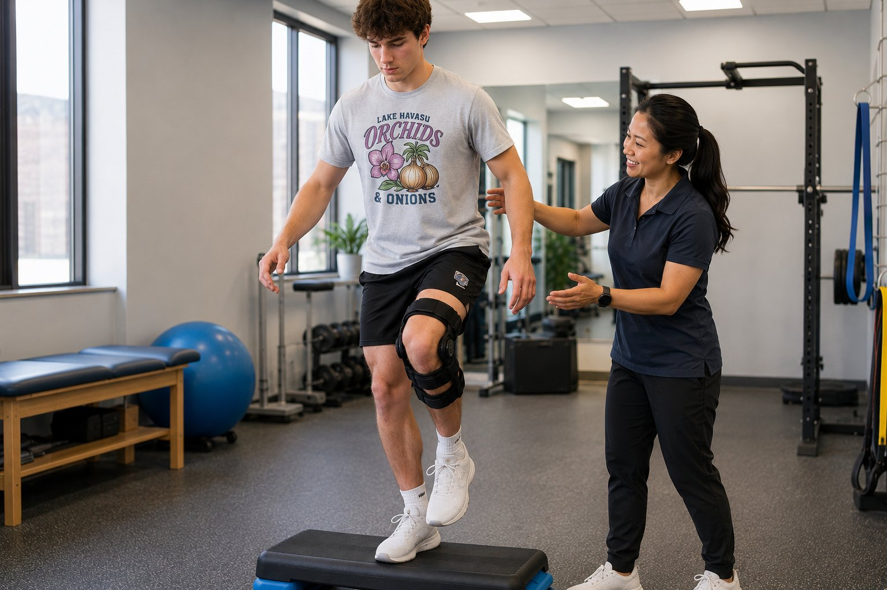
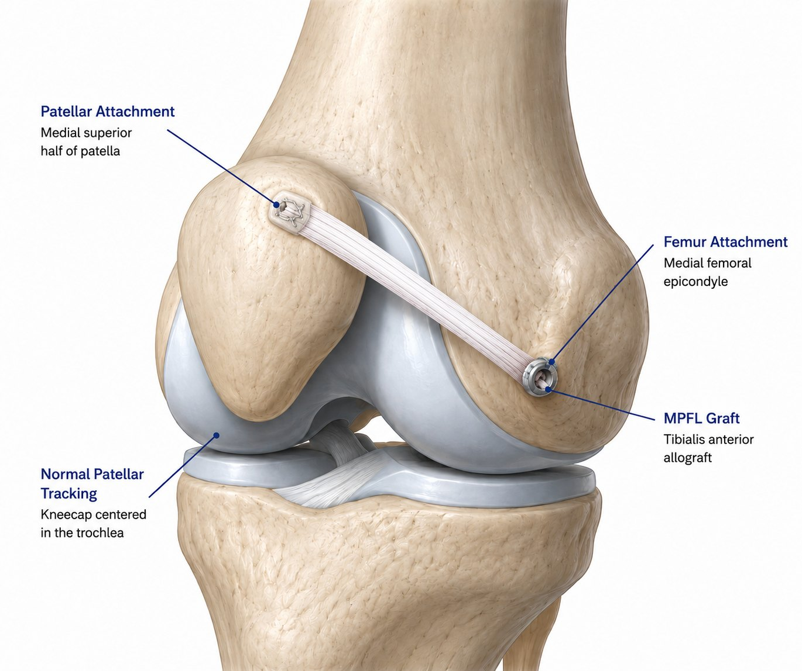
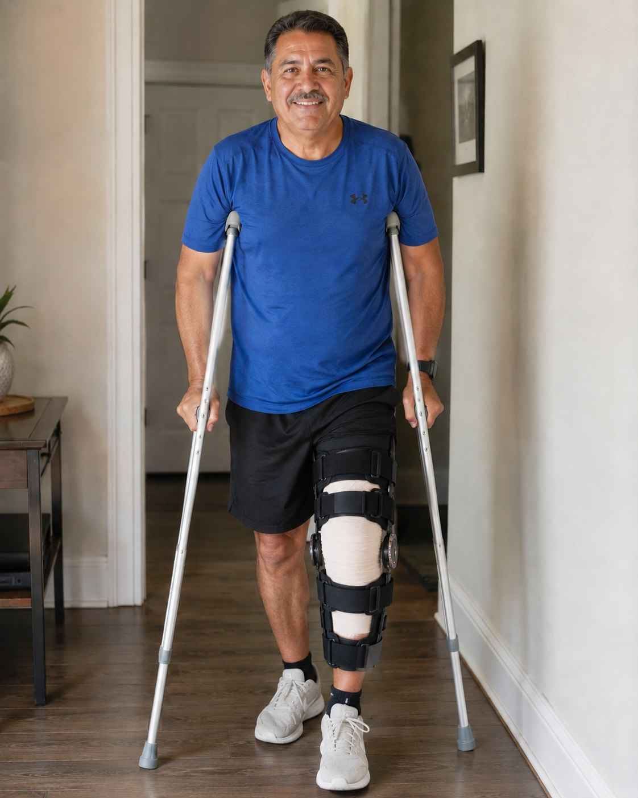
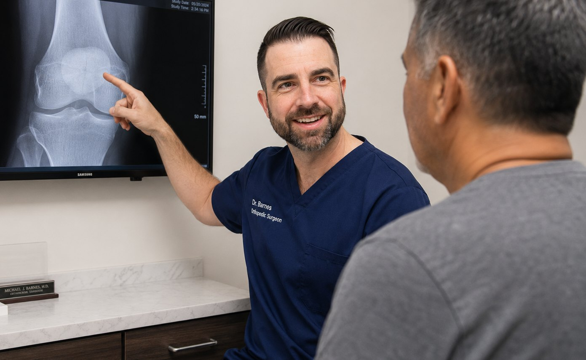

Knee Arthroscopy
Camera-guided surgery for selected mechanical symptoms, loose bodies, cartilage flaps or meniscus problems.
- Small incisions
- Mechanical symptom treatment
- Not every arthritis problem benefits
Knee pain can make it difficult to walk, climb stairs, sleep, work, golf, play pickleball, hike, run, ride, or stay active on the lake and in the desert. Dr. Barnes evaluates knee arthritis, meniscus tears, ACL injuries, patellar instability, swelling, fractures, tendon injuries and other knee problems with a practical plan built around your diagnosis, goals and activity level.
Knee arthritisPain, stiffness, swelling and activity limits
Meniscus & cartilageCatching, locking, joint-line pain and swelling
ACL & sports injuriesInstability, pivoting injuries and return-to-sport planning
Mako knee replacementRobotic-assisted knee replacement when appropriate
Professional services provided through CH Orthopedics at Convergence Health.



Patients do not always know whether they have arthritis, a meniscus tear, ligament injury, cartilage problem, bursitis, Baker's cyst or fracture. They usually know what knee pain is preventing them from doing.
Knee pain can be deceptively similar across very different problems. Arthritis, a meniscus tear, patellar instability, a Baker's cyst, a ligament injury and fracture pain can overlap. A focused history, exam and imaging review helps match treatment to the actual problem.
Knee pain can come from bone, cartilage, meniscus, ligaments, tendons, bursa, swelling or referred sources. The evaluation helps identify the main driver of pain and function loss.
Osteoarthritis, post-traumatic arthritis and inflammatory patterns can cause pain, stiffness, swelling and activity limitation.
Twisting injuries or degenerative tears may cause joint-line pain, swelling, catching, locking or pain with squatting.
Pivoting injuries, sudden deceleration, falls or sports injuries may cause swelling, instability and difficulty returning to cutting activities.
Kneecap dislocations, subluxations, MPFL injuries and recurrent apprehension with sports or daily activity.
Prepatellar bursitis, pes anserine bursitis and irritation from kneeling, overuse or inflammation.
Posterior knee swelling often associated with arthritis, meniscus pathology or underlying joint effusion.
Cartilage or bone fragments can cause catching, locking, swelling or motion blocks.
Swelling may come from arthritis, meniscus tears, ligament injury, cartilage injury, fracture or inflammation.
Focal cartilage defects, chondral flaps, patellofemoral cartilage wear and osteochondral injuries.
Patella fractures, tibial plateau fractures, distal femur fractures and proximal tibia/fibula injuries.
Quadriceps tendon and patellar tendon ruptures can make it difficult or impossible to actively straighten the knee.
Patellar tendinitis, IT band pain, runner's knee, jumper's knee and training-related symptoms.
The knee is a complex hinge joint built for strength, motion, shock absorption and stability. Pain may come from the joint surface, meniscus, ligaments, kneecap, tendons, bursa or bone.

Most knee problems deserve a thoughtful discussion of both nonsurgical and surgical options. The right plan depends on the diagnosis, severity, imaging findings, activity goals, age, health and response to prior care.


Not every arthritic knee needs surgery. When arthritis is advanced and pain limits walking, sleep, stairs, travel or independence despite appropriate nonsurgical care, total knee replacement may be reasonable to discuss.
For selected patients with advanced knee arthritis, Dr. Barnes may use Mako robotic-assisted technology as part of knee replacement planning and execution. The robot does not perform the surgery independently. It is a surgeon-controlled tool used when it fits the patient, diagnosis and goals.
Procedure recommendations are individualized after exam, imaging review and a discussion of goals, nonsurgical alternatives and recovery expectations.

Camera-guided surgery for selected mechanical symptoms, loose bodies, cartilage flaps or meniscus problems.

Some tears can be repaired. Others may require trimming when symptoms remain mechanical and limiting.

For selected patients with instability, pivoting demands, athletic goals or associated injuries.

For recurrent patellar instability, kneecap dislocations or subluxation patterns.

Quadriceps tendon and patellar tendon ruptures may require repair or reconstruction.

Fractures around the knee may require plates, screws, nails or other fixation depending on pattern.
All surgery has risk, including pain, bleeding, infection, damage to surrounding tissues, stiffness, need for additional procedures, blood clot, implant or fixation failure, tendon or ligament failure, heart attack, stroke and death. These risks are low, but they are not zero.
The goal is not just treating a diagnosis. It is helping patients return to the life they actually live in Lake Havasu and the surrounding desert communities.
Common questions from patients with knee pain, swelling, arthritis and sports injuries.
Not always. X-rays, exam findings, swelling, injury history and mechanical symptoms help determine whether MRI is useful.
They can overlap. Arthritis often causes stiffness, aching, swelling and activity-related pain. Meniscus tears may cause joint-line pain, catching, locking or pain with twisting.
Rapid swelling after injury, inability to bear weight, fever, redness, severe pain, deformity or loss of motion should be evaluated.
Cortisone may reduce inflammation and pain for selected patients, but it is not a cure and should be used thoughtfully.
Hyaluronic acid is a gel-like injection option used for selected arthritis patients depending on symptoms, severity and coverage.
PRP may be considered for selected tendon, ligament, cartilage or arthritis-related conditions, but it is not appropriate for every patient. Learn more on the Orthobiologics page.
Usually when arthritis is advanced, symptoms meaningfully limit life, imaging supports the diagnosis, and nonoperative care no longer provides acceptable relief.
No. Robotic assistance is surgeon-controlled. It helps with planning and precision, but the surgeon performs the operation.
Schedule a focused knee evaluation with Dr. Barnes in Lake Havasu City.